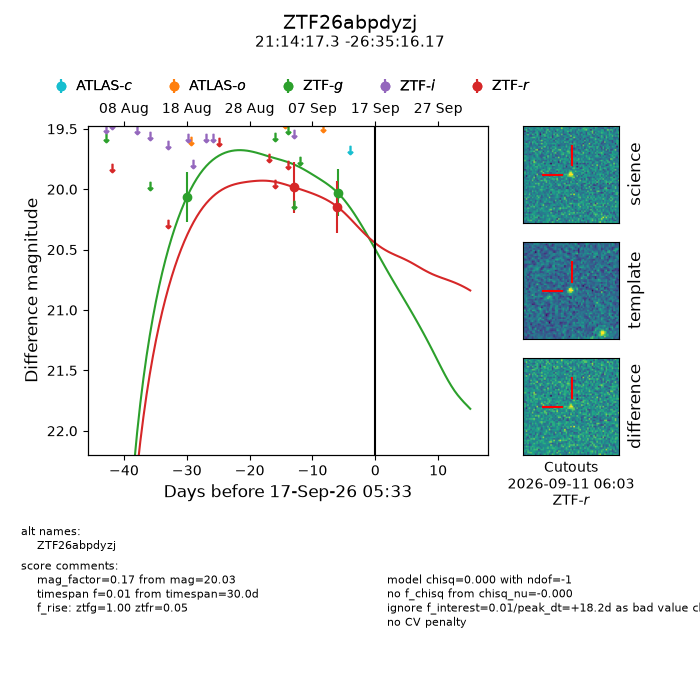
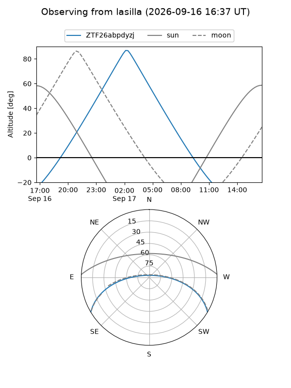
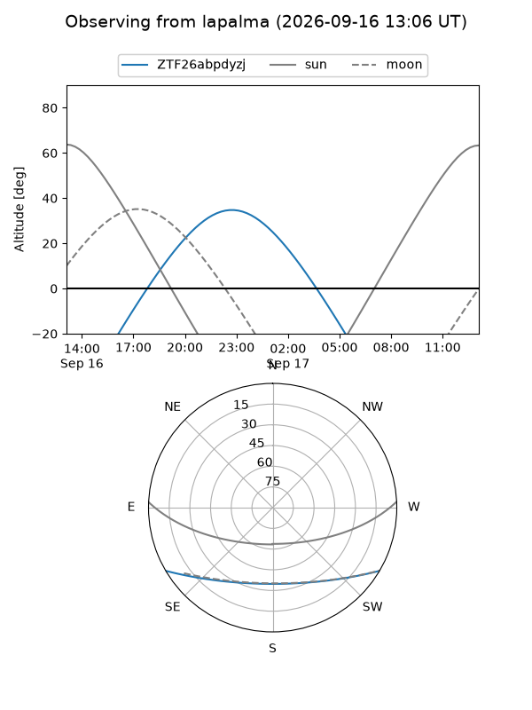
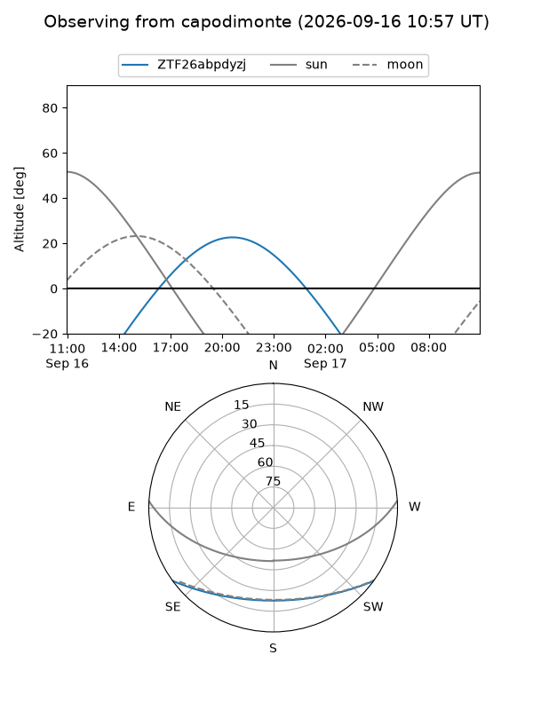
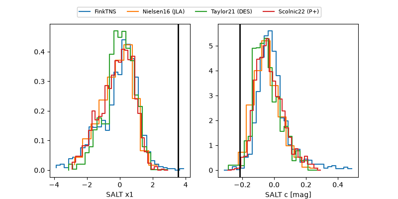

ZTF26abpdyzj
Target ZTF26abpdyzj at 2026-09-17 05:35
Aliases and brokers:
FINK-ZTF: ztf.fink-portal.org/ZTF26abpdyzj
Lasair-ZTF: lasair-ztf.lsst.ac.uk/objects/ZTF26abpdyzj
ALeRCE-ZTF: alerce.online/object/ZTF26abpdyzj
Direct TNS query: direct search
alt names
ZTF26abpdyzj (ztf,fink_ztf)
Coordinates:
equatorial (ra, dec) = 318.5721,-26.58782
equatorial (HMS+DMS) = 21:14:17.30,-26:35:16.17
galactic (l, b) = (20.4815,-41.96296)
Flags:
peak dt: +18.2
Photometry:
last ztfg=20.03, ztfr=20.15
2 ztfg, 2 ztfr detections
Lightcurve

Visibility



Additional plots
